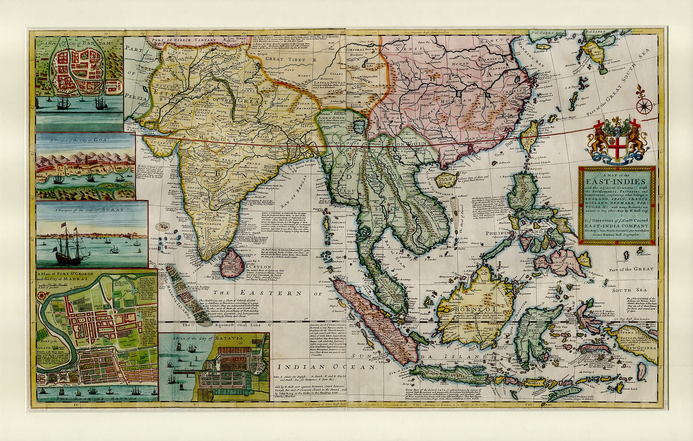

Monopolio

Consolidazione Industriale
Durante questa fase, si assistette a una maggiore concentrazione e consolidazione
delle industrie. Le imprese iniziarono a crescere in dimensioni e potere attraverso
fusioni, acquisizioni e la creazione di cartelli. Questo portò alla formazione di
monopolii o oligopoli in vari settori industriali.
Controllo del Mercato
Grandi imprese o gruppi di imprese spesso detenevano il controllo quasi completo
di determinati mercati o settori. Questo controllo poteva limitare la concorrenza
e consentire alle imprese dominanti di stabilire prezzi e condizioni di mercato.
Ferrovie e Industria del Petrolio
Settori chiave come le ferrovie e l'industria del petrolio furono notevolmente
influenzati dai monopoli. Aziende come la Standard Oil, fondata da John D. Rockefeller,
divennero esempi di monopoli che controllavano gran parte del settore petrolifero.
Trust e Holding Company
Per evitare leggi antimonopolio, alcune grandi imprese crearono trust o società
di controllo (holding company), che permettevano loro di mantenere un'apparenza
di legalità mentre controllavano diverse aziende.